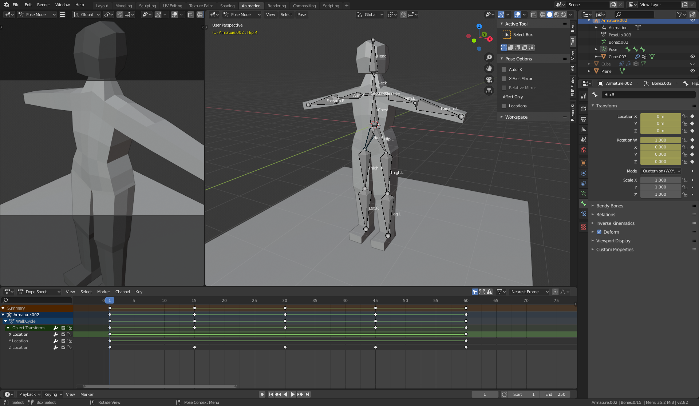

Back
Human Model
This human model was meant to be a test in rigging a humanoid character. Since most characters in animated films and games are humanoid, rigging a character of that shape will be an important skill. It also helps that, as a human-shaped person, I know how a human is meant to move.
Nearly this whole Blender file was made using the Wikibooks, Model a Human Character, tutorial page. The process uses the mirror modifier to make a symetrical figure and ring loops to add geometry to extrude. The armature is fairly straightforward; most of the process is staying organized with a labeling system.
